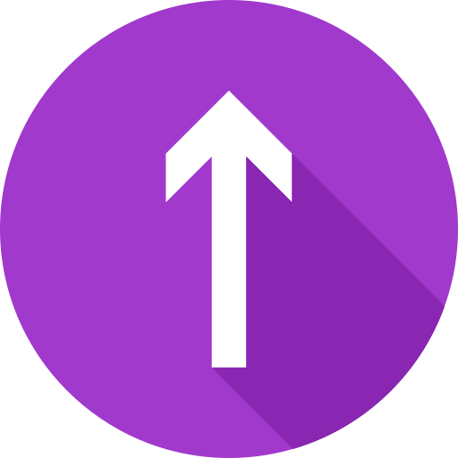

<div class="main-container">
  <!-- scroll icon  -->
  <div class="scroll-to-top" *ngIf="showScrollButton" (click)="scrollToTop()">
    <svg class="progress-ring" width="60" height="60">
      <circle class="progress-ring__circle" [attr.stroke-dasharray]="circumference"
        [attr.stroke-dashoffset]="strokeDashOffset" stroke="gray" stroke-width="5" fill="transparent" r="25" cx="30"
        cy="30" />
    </svg>
    
  </div>
  <app-navbar (sectionSelected)="scrollTo($event)"></app-navbar>

  <div id="home" [@bounceIn]="sectionStates['home'] || 'hidden'">
    <app-main-content></app-main-content>
  </div>

  <div id="about" [@bounceIn]="sectionStates['about'] || 'hidden'">
    <app-about-me></app-about-me>
  </div>

  <div id="projects">
    <app-main-portfolio-section></app-main-portfolio-section>
  </div>

  <div id="footer" [@bounceIn]="sectionStates['footer'] || 'hidden'">
    <app-footer-section></app-footer-section>
  </div>
</div>